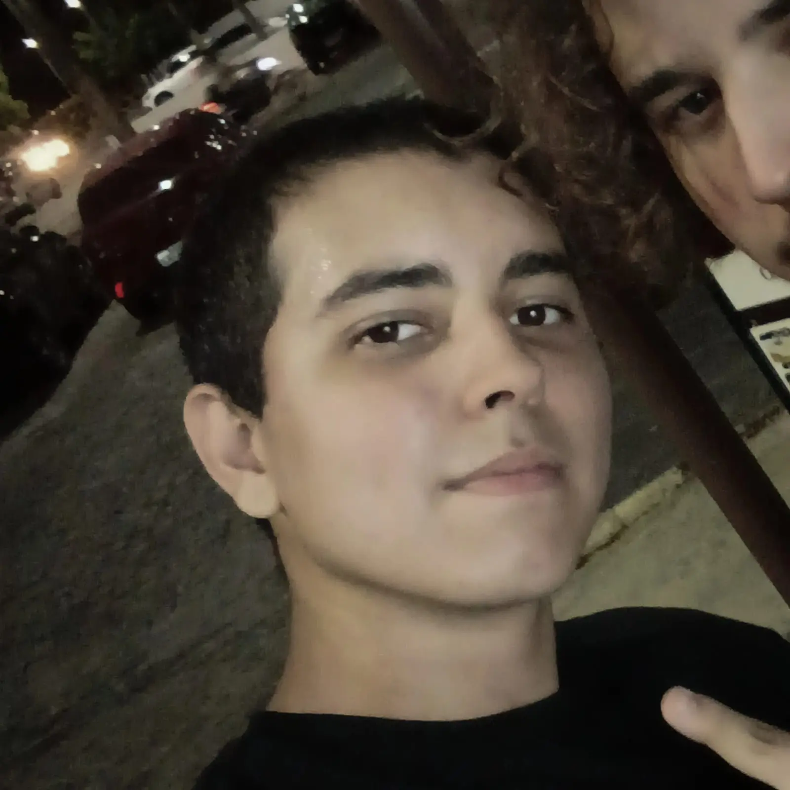

Enzo desempenhou um papel fundamental nas etapas estratégicas do projeto. Foi responsável pela análise inicial e pelo planejamento estrutural do site, além de colaborar ativamente no desenvolvimento do design da interface (UI/UX) e na elaboração da documentação técnica, garantindo que o projeto seguisse os requisitos estabelecidos.
Iago foi o principal pilar de suporte informacional e conceitual do grupo. Atuou diretamente na idealização do projeto, na pesquisa de fontes confiáveis e no levantamento de recursos essenciais para a construção do site, além de estruturar e revisar a documentação textual da aplicação.
Filipe ficou encarregado da camada de interatividade do site, sendo o desenvolvedor responsável pela criação e implementação do chatbot em JavaScript. Além disso, deu suporte técnico essencial na estruturação e estilização do código utilizando HTML e CSS.

Marco transformou os conceitos em realidade funcional, liderando o desenvolvimento do front-end através da escrita do código em HTML e CSS. Também atuou na organização e refinamento das ideias do grupo, garantindo que o layout final fosse fiel à proposta planejada.